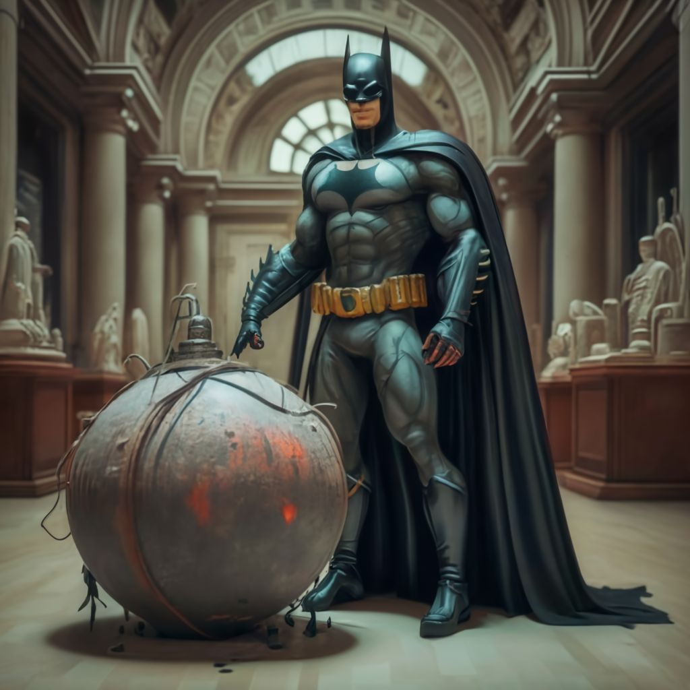
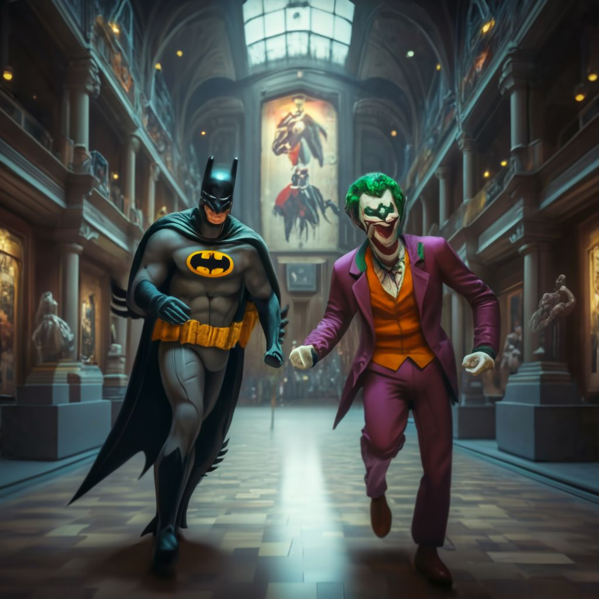

Eligiendo confrontar al Joker y salvar a los rehenes en el museo de Gotham, Batman ajusta su curso en la oscuridad, sintiendo el peso de la decisión en sus hombros. La urgencia de la situación se hace más palpable a medida que se acerca al museo, donde las luces de emergencia parpadean como un siniestro presagio de lo que está por venir.
Al llegar, Batman observa la escena desde las sombras, planificando meticulosamente su próximo movimiento. El Joker, siempre impredecible, ha hecho del museo su propio teatro del horror, con los rehenes atados y dispersos entre las exposiciones, transformando el arte y la historia en parte de su macabro juego.
Consciente de que el tiempo es esencial, Batman decide actuar, utilizando su combinación de sigilo, ingenio, y herramientas tecnológicas para desarmar las trampas del Joker y liberar a los rehenes sin alertar al Joker de su presencia. Cada segundo cuenta mientras Batman se mueve con precisión, consciente de que cualquier error podría resultar en una catástrofe.
Finalmente, tras un tenso juego del gato y el ratón, Batman se encuentra cara a cara con el Joker en la sala principal del museo. El Joker, con su sonrisa característica, da la bienvenida a Batman a su "exhibición final", donde ha preparado una sorpresa final: un mecanismo que liberará el gas del Joker en todo el museo si Batman no logra desactivarlo a tiempo.
Opción 1: Intentar desactivar el mecanismo del gas del Joker, arriesgándose a que el Joker aproveche ese momento para atacar.
Opción 2: Enfrentar directamente al Joker, esperando neutralizarlo rápidamente antes de que active el mecanismo él mismo.
¿Cuál debería ser el próximo movimiento de Batman?
|
Opción 1
 |
Opcion 2
 |